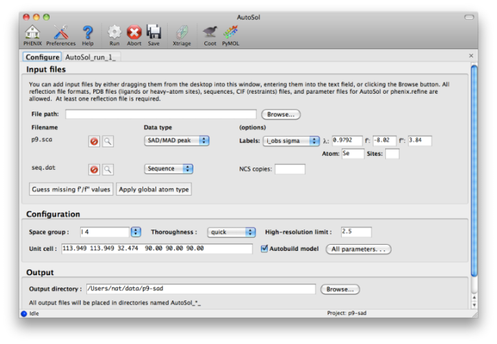
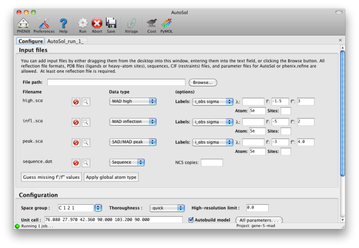
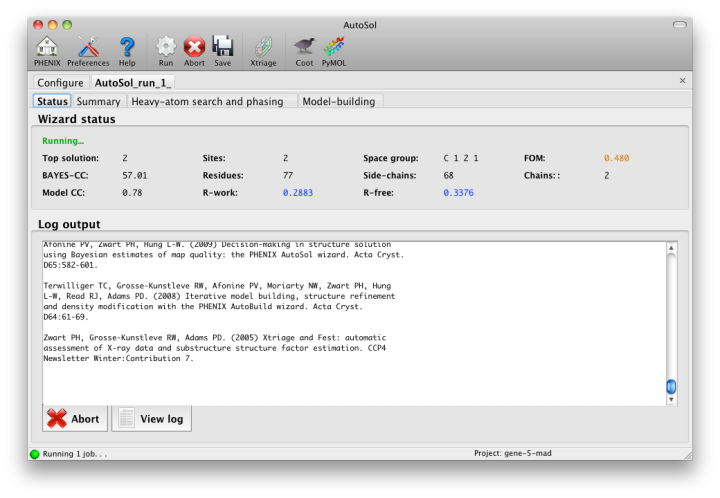
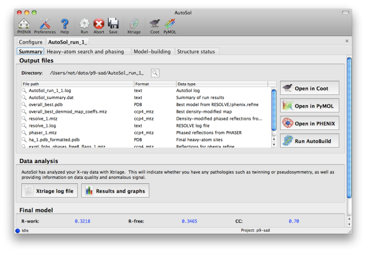
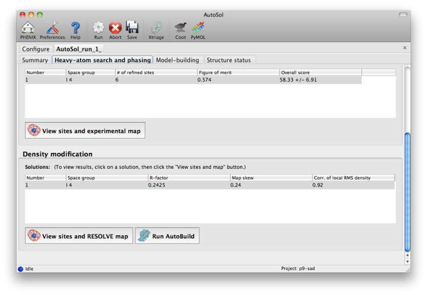
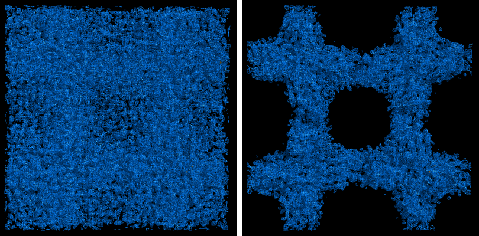
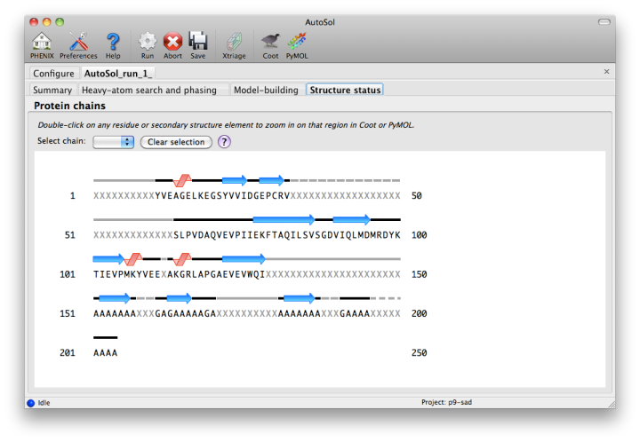
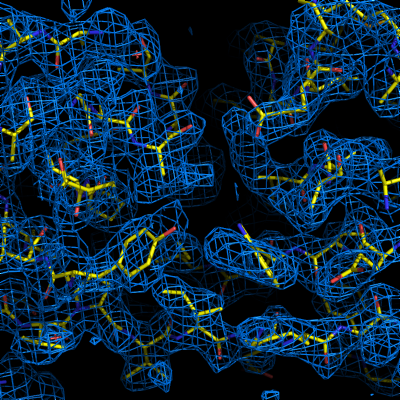

NOTE: this document is mainly an introduction for users who are not familiar with AutoSol (or experimental phasing in general), rather than a comprehensive reference for the program. The documentation for the command-line version covers the full range of options and functionality.
AutoSol is an experimental phasing pipeline that combines HySS (Hybrid Substructure Search) for finding heavy-atom sites, Phaser or SOLVE for calculating experimental phases, and RESOLVE for density modification and (optional) model-building. It will automatically try multiple solutions as necessary and determine which is most likely to give the desired result; several different measures of solution quality (discussed below) are supplied. With good data, a partial model can be obtained for an average-size protein (30kD) in under an hour, starting only from scaled reflections and a sequence file.
The examples below mostly use the p9-sad example included in the Phenix distribution. If you have not previously performed experimental phasing or used AutoSol, we recommend setting up a tutorial project in the GUI and running the full example. Because these data extend to a relatively high resolution (1.7A), AutoSol can build a nearly complete model with R-factors well below 0.3, but to save time you may prefer to truncate the resolution at 2.5A, which will finish in less than 15 minutes.
A tutorial video is available on the Phenix YouTube channel and covers the following topics:
Most users will have anomalous data from a single crystal (or merged from multiple similar crystals); although SIR and MIR phasing (with or without anomalous information) is supported, these types of experiment are typically done as a last resort. At a minimum, one reflections file containing scaled anomalous intensities or amplitudes is required. Any input format is supported, and in most cases AutoSol is run immediately after data processing. Files can be added to the input list by dragging them into the main window, or by clicking the "Browse" button and selecting them from a file dialog. The GUI will automatically determine the file type, usually assuming that a SAD or MAD experiment is being performed. In most cases the data labels for reflections will be guessed automatically (in the p9-sad example, only one set of values is available anyway).

You should always supply a sequence file (usually in FASTA format) if you have this information, although it is optional if you do not perform model-building. If more than one chain is present, multiple sequences may be specified in a single file. At this time, AutoSol (and AutoBuild) can build either protein or nucleic acid structures, but not both at once.
When you add a reflections file, additional controls will appear for specifying experiment details such as heavy atom type and number, and anomalous scattering parameters. If you are trying to phase using selenomethionine (SeMet), the number of atoms can be automatically determined from the sequence. The wavelength is required for SAD but optional for other phasing methods; anomalous coefficients (f' and f'') are optional for SAD (but highly recommended if they were measured), and required for MAD. If you did not measure these parameters at the beamline using a fluorescence scan, they can be guessed based on the wavelength by clicking the button below the file list. For MAD phasing, the experimentally determined values are more essential, and often make the difference between an uninterpretable map and an obviously correct solution. A different example (gene-5-mad, also included in the PHENIX distribution) using multiple wavelengths is shown below; the inputs are only slightly more complicated than for SAD. (In this case the wavelengths and anomalous coefficients are listed in the file README.txt in the example directory.)

Assuming that the space group and unit cell are automatically extracted from the reflection files, most of the other parameters can be left on the defaults, although in the first image above we have changed the resolution to 2.5A. The p9-sad example contains only a single protein chain in the asymmetric unit so the number of NCS copies can be left blank, but you should enter this if you are confident of the crystal contents. We recommend leaving the model-building on, since it is the single most useful measure of whether the final map is interpretable or not. If you have an RNA or DNA crystal, you may explicitly set the chain type by clicking the "All parameters" button, select "Crystal info" from the menu, and change the drop-down menu for "Chain type".
Three other types of input file are optional but may be useful in special cases: heavy-atom sites (in PDB format) from an external program such as SHELXD, phases (in MTZ format) from an MR model or another phasing program, or a molecular replacement solution (in PDB format). The use of pre-defined sites is not discussed here as it is essentially very simple. External phases can be used to help SOLVE find heavy-atom sites in phasing methods other than SAD. The combination of MR and SAD is described at the end of this document.
Once you start AutoSol, a new tab is added to the GUI, with multiple sub-tabs displaying job status and results. The first tab prints the log output and summary of the current best statistics for the run once they are available.

The second tab displays a list of the most important output files in the job directory created by AutoSol. Buttons for viewing the results in graphics applications will be activated once the necessary files are detected. The image below is the appearance of this tab at the end of running the p9-sad example.

The first step in the phasing pipeline is running the data analysis program phenix.xtriage, which identifies potential problems such as twinning, translational pseudo-symmetry, or weak anomalous signal. (Xtriage can also be run by itself, starting from the main GUI or the toolbar button in AutoSol, but you do not need to do this if AutoSol has already run it for you.) The graphs and summary text from Xtriage may be viewed by clicking the button that appears in this section. We recommend that you read the documentation for the Xtriage GUI for more information about interpreting the output. If AutoSol is not successful in phasing your structure, it is especially important to look over the Xtriage results before spending more effort on the same data.
Within a few minutes, information on heavy-atom site finding will appear in the third tab. There may be more than one solution if you are running a MAD or MIR experiment, but AutoSol will pick the one mostly likely to be correct for further analysis. The most important statistic here is the number of sites located; it will usually be less than the final number of refined sites, and the difference will be made up in the phasing step. If the number of sites is much less than expected, you may not have sufficient anomalous signal in your data, or (when not using SeMet) the heavy atom may not be bound.
Phasing is done by Phaser for SAD experiments, SOLVE for everything else, but the reported statistics are the same, and provide the first indication whether the structure is solveable by AutoSol. If Phaser is run, additional heavy-atom sites will be added based on the log-likelihood-gradient map, and phases recalculated using the new sites. Phasing is followed by density modification in RESOLVE; these two steps combined take only a couple of minutes for an average-sized structure. Once solutions are finished with each step, you may view the maps and sites in Coot or PyMOL by clicking one of the buttons below the solution lists:

The map produce by the phasing step will usually be uninterpretable due to poor phase quality, especially in SAD experiments where the phase ambiguity can not be resolved. The images below show the experimental maps (over the entire unit cell) for the p9-sad example; first the map from Phaser, then the density-modified map from RESOLVE, in identical orientations and contour levels. Note that while the protein region is more electron-dense even in the initial SAD map, the boundary between protein and bulk solvent is impossible to determine. However, even in the map from Phaser, the heavy-atom sites should be clearly inside strong density.

The phasing and density modification steps generate several statistics; the full AutoSol manual provides a detailed explanation of these (see the section "Scoring of heavy-atom solutions"). Some approximate guidelines for their interpretation:
- The Figure of Merit (FOM) is an estimate of phase quality, ranging from 0 to 1. For SAD, above 0.45 is very good, and between 0.25 and 0.45 is marginal. For MAD, these thresholds increase to 0.45 and 0.65.
- The Overall Score (also BAYES-CC) is simply a correlation coefficient multiplied by 100. The higher this number is, the better the solution.
- The R-factor for density modification is calculated by performing an inverse Fourier transform on the density-modified map to obtain F(calc), and comparing this to F(obs). This is on the same scale as a refinement R-factor, so below 0.3 is ideal; however, a low value does not guarantee a usable solution.
- The "skew" is a measure of the deviation of the distribution of electron density values in the raw phased map from a Gaussian; a macromolecular crystal will have a large "tail" of very high density values. A skew of 0.2 is usually very good.
The automated model-building step is the most time-consuming stage, but by far the most useful indication of success. Building is done by RESOLVE, and alternated with refinement in phenix.refine. AutoSol will automatically build SeMet residues when appropriate, based on heavy-atom positions. If possible, the user-provided sequence will be docked into the peptide chain. A schematic of the sequence and current model coverage (including secondary structure content) will be added in a new tab once a PDB file is available. If you have the model and map open in Coot or PyMOL, double-clicking on any residue or secondary structure element will zoom to that region.

The final model is rarely complete and may contain gross errors, but a genuine solution is usually unambiguous based on visual inspection, the refinement R-factors, and the correlation coefficient.

If using the full resolution range of the p9-sad example, an R-free below 0.25 is possible; when truncating at 2.5A, the R-free is nearly 0.35, but this is still obviously correct. An R-free between 0.4 and 0.5 is usually indicative of a solved structure, but may indicate poor resolution and/or low-quality phases. In any case, running the more comprehensive (but slower) AutoBuild wizard often leads to significant improvement. R-free above 0.5 is rarely usable; even if the phases are approximately correct, the map is not interpretable enough to build automatically.
Important: if you are going to use the final model from AutoSol in further rounds of building and refinement, it is essential that you use the reflections in the file exptl_fobs_phases_freeR_flags_X.mtz (where X is the solution number), which will be listed in the Summary tab. This contains the R-free set used for refinement during building; failing to use these data will bias the R-free in future refinements. It also contains experimental phase information (Hendrickson-Lattman coefficients), which may be useful as additional restraints during refinement.
Assuming that you have a correct solution, there are several immediate options for improving the model. Validation at this stage is usually not worthwhile, as many of the automatic procedures may yield a significant improvement right away. We generally recommend running the AutoBuild wizard, which will usually drop R-free by several percent if not more. This can be started by clicking the button next to the list of output files in the Summary tab; appropriate files will be pre-loaded, including heavy-atom sites. AutoBuild may take several hours to run, but if you have a multi-core system it can be set to run in parallel.
With a very good solution, such as the p9-sad data with the full resolution range, the model from AutoSol may be good enough to jump directly to running phenix.refine. At this point, simulated annealing will probably be helpful; at moderate-to-high resolutions (2.5A or better), you should also turn on rotamer fitting and solvent picking.
The most common reason for experimental phasing to fail is poor data quality - this may mean radiation damage, low signal-to-noise ratio, severe incompleteness, very little anomalous signal (sometimes due to lack of high-occupancy heavy-atom sites), or lattice pathologies such as twinning or pseudo-translation. The Xtriage output may be helpful in diagnosing faults in the data.
If the data are of relatively good quality and anomalous signal is present but few or no heavy-atom sites were found, it may be helpful to supply additional input files. Heavy-atom sites identified by another program are one possibility; another is a partial molecular replacement solution, which can be used to bootstrap MR-SAD phasing. In MR-SAD, Phaser uses the log-likelihood-gradient completion algorithm to add anomalous scatterers to the molecular replacement solution. The resulting phases combine information from both sources, MR and SAD. This procedure may be successful in situations where neither MR nor SAD is sufficient by itself. To run MR-SAD, first carry out MR using either the Phaser-MR or MRage GUI; when it is finished, use the molecular replacement solution as a partial model file in the AutoSol GUI.